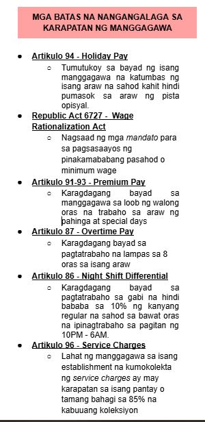
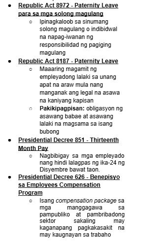

Ang umaalalay sa buong yugto ng produksyon, distribusyon, kalakalan, at pagkonsumo ng mga produkto sa loob o labas ng bansa.
Kilala rin ito bilang tersarya o ikatlong sektor ng ekonomiya matapos ang agrikultura at industriya.
Mga serbisyong pampublikong sasakyan, mga paglilingkod ng telepono at mga pinapaupahang bodega.
Pagpapalitan ng iba’t-ibang produkto at serbisyo.
Serbisyong may kinalaman sa bangko, insurance, at pamumuhunan.
Nagbibigay ng tulong pinansyal gaya ng mga bangko, bahay-sanglaan, atbp.
Mga paupahan tulad ng mga apartment, mga developer ng subdivision, town house, at condominium.
Lahat ng mga paglilingkod na nagmumula sa pribadong sektor ay kabilang dito.
Lahat ng paglilingkod na ipinagkakaloob ng pamahalaan.

